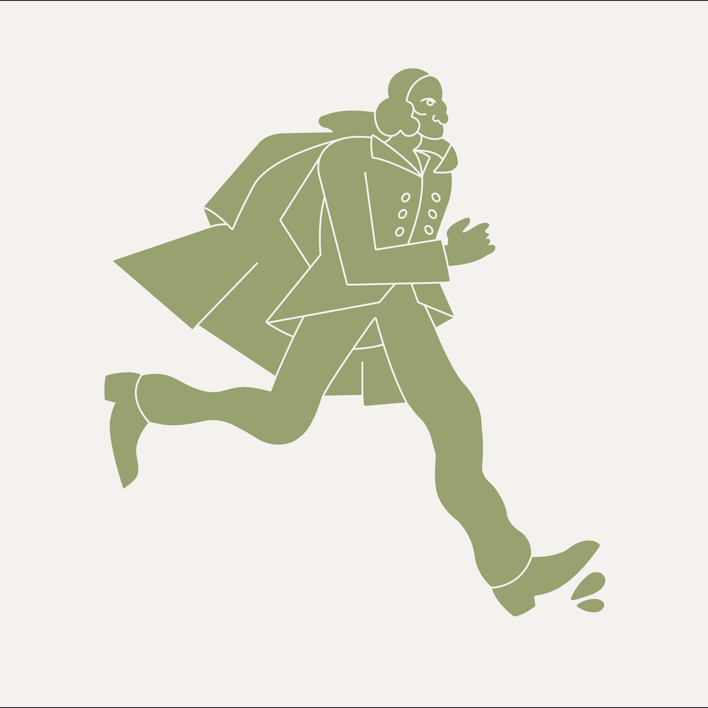

bailey foltz
bailey foltz
graphic designer
+ brand designer
+ illustrator
k&n investors
logo design • visual system guidelines • printed assets • digital assets • web design and development
For K&N Investors
[ 2024 ]

green traill 5k
logo design • visual system guidelines • printed assets • digital assets
For the Green Traill 5k
[ 2024 ]
bayard farms
logo design • visual system guidelines • printed assets • digital assets
For Bayard Farms LLC
[ 2024 ]
three streams
logo redesign • visual system guidelines • printed assets
For Three Streams Brewery
[ 2024 ]

100 days of zines
illustration
Every day, for 100 days, I made a zine
[ 2021 ]